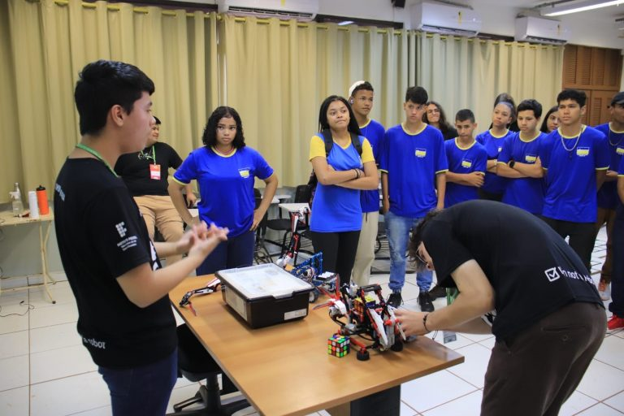
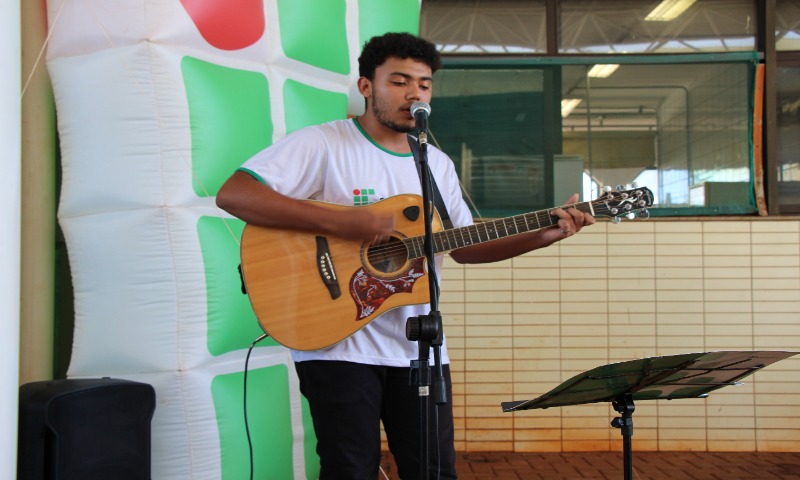

Na Semana do Meio Ambiente ocorre durante uma semana, em que os alunos participam de atividades diferentes. Por exemplo, na última semana do meio ambiente, eles foram para o Lar Santa Rita, pegaram as crianças e foram para o Ceeper 1 Plano para brincarem com elas, passando a manhã inteira lá. Outros alunos ficaram na escola e aprenderam Libras, a cozinhar e a fazer joias com garrafas pets, entre outras atividades diferentes.
No IFMS temos oficina de Robótica, onde os alunos aprendem a montar robôs usando peças de lego e o Mindstorm (EV3) da Lego, e um aplicativo próprio da Mindstorm, onde eles usam para dar a informação que o robô precisa, para fazer a inscrição é mandado nos Grupos de cada sala, equem se interessar, pode fazer a inscrição e ganhar horas extras, além de um certificado de participação, também a robôs com circuitos de verdade que é usado com o arduíno que apesar de ser mais barato é mais difícil de programar.
No IFMS Dourados, ocorre o Intervalo Cultural, onde os aunos podem colocar seus desenhos a exposição, cantar, dançar, ler poemas ou tocar algum instrumento musical, esse evento ocorre de mês em mês e é organizado pelo(a) OPresidented Grêmio Estudantil, onde eles arranjam os materiais necessaários para que o evento possa ocorrer durante o intervalo.
